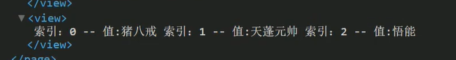

详细教程可以查看黑马编写的文档 黑马文档
颜色只能是十六进制形式
其他选择访问https://developers.weixin.qq.com/miniprogram/dev/reference/configuration/app.html#pages
xxxxxxxxxx121"pages":[2 "pages/index/index",3 "pages/logs/logs"4],5"window":{6 "backgroundTextStyle":"light", // 下拉刷新框的风格，只有light 和 dark7 "navigationBarBackgroundColor": "#fff", //导航栏背景颜色8 "navigationBarTitleText": "Weixin", //小程序标题9 "navigationBarTextStyle":"black", //标题颜色，只有白色和黑色10 "enablePullDownRefresh":true, //开启下拉刷新11 "backgroundColor": "#abcdfe" //刷新框的背景颜色12},
写在app.json中，和window同级，
xxxxxxxxxx331"tabBar": {2 "list": [3 {4 "pagePath": "pages/index/index",5 "text": "首页",6 "iconPath": "icon/_home.png",7 "selectedIconPath": "icon/home.png"8 },9 {10 "pagePath": "pages/img/img",11 "text": "图片",12 "iconPath": "icon/_img.png",13 "selectedIconPath": "icon/img.png"14 },15 {16 "pagePath": "pages/search/search",17 "text": "搜索",18 "iconPath": "icon/_search.png",19 "selectedIconPath": "icon/search.png"20 },21 {22 "pagePath": "pages/mine/mine",23 "text": "我的",24 "iconPath": "icon/_my.png",25 "selectedIconPath": "icon/my.png"26 }27 ],28 "color":"#eeff33", //未选中颜色29 "selectedColor": "#225599", //选中颜色30 "backgroundColor": "#000000", //背景颜色31 "borderStyle": "white",32 "position": "bottom" //位置33 },
每一个小程序页面也可以使用 .json 文件来对本页面的窗口表现进行配置。页面中配置项在当前页面会覆盖 app.json 的 window 中相同的配置项
所以在pages字段中要将该页面放在index的上方，否则不会覆盖
属性同window
是在小程序发布时才会使用到
微信现已开放小程序内搜索，开发者可以通过 sitemap.json 配置，或者管理后台页面收录开关来配置其小程序页面是否允许微信索引。当开发者允许微信索引时，微信会通过爬虫的形式，为小程序的页面内容建立索引。当用户的搜索词条触发该索引时，小程序的页面将可能展示在搜索结果中。
xxxxxxxxxx121 data: {2 msg: "hello mina",3 num: 10000,4 isGirl: false,5 person: {6 age: 74,7 height: 145,8 weight: 200,9 name: "富婆"10 },11 isChecked: false12 },xxxxxxxxxx291<!-- 2 1 text 相当于原来的 span 标签，是行内元素 不会换行3 2 view 相当于原来的 div 标签，是块级元素 会换行4 -->5<text>1</text>6<text>2</text>7<view>12</view>8
9<!-- 1 字符串 -->10<view> {{msg}}</view>11<!-- 2 数字类型 -->12<view>{{num}}</view>13<!-- 3 bool类型 -->14<view>是否是伪娘:{{isGirl}}</view>15<!-- 4 object类型 -->16<view>{{person.age}}</view>17<view>{{person.height}}</view>18<view>{{person.weight}}</view>19<view>{{person.name}}</view>20<!-- 5在标签的属性中使用 要加双引号 -->21<view data-num="{{num}}">自定义属性</view>22<!-- 使用bool类型充当属性 checked23 字符串和花括号之间一定不要存在空格否则会导致识别失败24 以下写法就是错误的示范25 <checkbox checked=" {{isChecked}}"> </checkbox>26 -->27<view>28 <checkbox checked="{{isChecked}}"></checkbox>29</view>
可以在{{}}中，写数学运算，字符串拼接，以及三元表达式
xxxxxxxxxx31{{1 + 1}}2{{"dsd" + "da"}}3{{10%2 === 0 ? "偶数" : "奇数"}}
xxxxxxxxxx471<!-- 2 8 列表循环3 1 wx:for="{{数组或者对象}}" wx:for-item="循环项的名称" wx:for-index="循环项的索引"4 2 wx:key="唯一的值" 用来提高列表渲染的性能5 1 wx:key 绑定一个普通的字符串的时候 那么这个字符串名称 肯定是 循环数组 中的 对象的 唯一属性6 2 wx:key ="*this" 就表示 你的数组 是一个普通的数组 *this 表示是 循环项 7 [1,2,3,44,5]8 ["1","222","adfdf"]9 3 当出现 数组的嵌套循环的时候 尤其要注意 以下绑定的名称 不要重名10 wx:for-item="item" wx:for-index="index"11 4 默认情况下 我们 不写12 wx:for-item="item" wx:for-index="index"13 小程序也会把 循环项的名称 和 索引的名称 item 和 index 14 只有一层循环的话 （wx:for-item="item" wx:for-index="index"） 可以省略15
16 9 对象循环17 1 wx:for="{{对象}}" wx:for-item="对象的值" wx:for-index="对象的属性"18 2 循环对象的时候 最好把 item和index的名称都修改一下19 wx:for-item="value" wx:for-index="key"20
21 -->22 <view>23 <view 24 wx:for="{{list}}"25 wx:for-item="item"26 wx:for-index="index"27 wx:key="id"28 >29 索引：{{index}}30 --31 值:{{item.name}}32 </view>33 </view>34
35 <view>36 <view>对象循环</view>37 <view 38 wx:for="{{person}}"39 wx:for-item="value" 40 wx:for-index="key"41 wx:key="age"42 >43 属性:{{key}}44 --45 值:{{value}}46 </view>47 </view>block标签
xxxxxxxxxx201 <!-- 2 10 block3 1 占位符的标签 4 2 写代码的时候 可以看到这标签存在5 3 页面渲染 小程序会把它移除掉6 -->7
8 <view>9 <block 10 wx:for="{{list}}"11 wx:for-item="item"12 wx:for-index="index"13 wx:key="id"14 class="my_list"15 >16 索引：{{index}}17 --18 值:{{item.name}}19 </block>20 </view>最后结果就是直接去掉格式，一起打印

xxxxxxxxxx371<!-- 2 11 条件渲染3 1 wx:if="{{true/false}}"4 1 if , else , if else5 wx:if6 wx:elif7 wx:else 8 2 hidden 9 1 在标签上直接加入属性 hidden 10 2 hidden="{{true}}"11
12 3 什么场景下用哪个13 1 当标签不是频繁的切换显示 优先使用 wx:if14 直接把标签从 页面结构给移除掉 15 2 当标签频繁的切换显示的时候 优先使用 hidden16 通过添加样式的方式来切换显示 17 hidden 属性 不要和 样式 display一起使用18 -->19
20 <view>21 <view>条件渲染</view>22 <view wx:if="{{true}}">显示</view>23 <view wx:if="{{false}}">隐藏</view>24
25 <view wx:if="{{false}}">1</view>26 <view wx:elif="{{false}}">2 </view>27 <view wx:else> 3 </view>28
29 <view>---------------</view>30 <view hidden >hidden1</view>31 <view hidden="{{false}}" >hidden2</view>32
33 <view>-----000-------</view>34 <view wx:if="{{false}}">wx:if</view>35 <view hidden style="display: flex;" >hidden</view>36 <!--后面的style样式会直接覆盖掉hidden属性，仍然会显示，行内样式优先级高--> 37 </view>
注意字段的赋值需要调用setdata方法
xxxxxxxxxx261<!-- 2 1 需要给input标签绑定 input事件 3 绑定关键字 bindinput4 2 如何获取 输入框的值 5 通过事件源对象来获取 6 e.detail.value 7 3 把输入框的值 赋值到 data当中8 不能直接 9 1 this.data.num=e.detail.value 10 2 this.num=e.detail.value 11 正确的写法12 this.setData({13 num:e.detail.value 14 })15 4 需要加入一个点击事件 16 1 bindtap17 2 无法在小程序当中的 事件中 直接传参 18 3 通过自定义属性的方式来传递参数19 4 事件源中获取 自定义属性20 -->21<input type="text" bindinput="handleInput" />22<button bindtap="handletap" data-operation="{{1}}" >+</button>23<button bindtap="handletap" data-operation="{{-1}}">-</button>24<view> 25 {{num}}26</view>xxxxxxxxxx221// pages/demo04/demo04.js2Page({3 data: {4 num: 05 },6 // 输入框的input事件的执行逻辑7 handleInput(e) {8 // console.log(e.detail.value );9 this.setData({10 num: e.detail.value11 })12 },13 // 加 减 按钮的事件14 handletap(e) {15 // console.log(e);16 // 1 获取自定义属性 operation17 const operation = e.currentTarget.dataset.operation;18 this.setData({19 num: this.data.num + operation20 })21 }22})